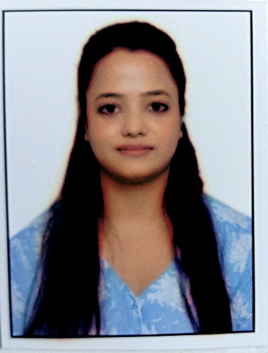

Suparna Mondal

Summary
A passionate web developer and Drupal developer with experience in building responsive and user-friendly websites.
Education
- Diploma in Computer Science & Technology - Womens Polytechnic Chandernagore (2009-2012)
- Bachelor of Technology in Computer Science & Engineering - M.C.K.V Institute Of Engineering, Liluah, West Bengal (2012-2015)
Work Experience
-
EWS Web Developer - Wipro Ltd.
April 2022 – Present
- Working on developing and maintaining Embedded Webserver sites using modern web technologies.
- Implementing responsive design principles to ensure a seamless user experience across devices.
- Integrating APIs and third-party services to enhance website functionality.
- Collaborating with designers and stakeholders to create user-friendly interfaces.
- Optimizing website performance and SEO best practices.
- Participating in code reviews and providing constructive feedback to team members.
- Providing technical support and troubleshooting assistance to clients.
- Continuous developing knowledge on advanced web development trends and technologies - React and Node.js.
-
Drupal Developer - Tata Consultancy Services Limited
March 2016 – March 2022
Project - Johnson & Johnson Fusion
- Developed and maintained websites using Drupal CMS.
- Worked over multiple Drupal websites on Fusion framework
- Customized new features, themes and modules to meet client requirements.
- Collaborated with cross-functional teams to deliver high-quality web solutions.
- Worked in the agile methodology of project management using tools like JIRA, Confluence.
- Used version control systems like Git and Bitbucket for code management.
- Worked on UI fixes for cross-browser application and jQuery for enhancing the site functionalities.
- Provided technical assistance to other team members and clients.
Project - B-Post (Belgium Post)
- Involved in development and support activities in B-Post.
- Worked over multiple Drupal websites, which was developed in Drupal 7 and Drupal 8.
- Customized new features and modified the existing functionality and its features.
- Worked on custom and contributed modules and api for a new site application of same project using Bootstrap theme, HTML, CSS, PHP
- Gave fully support for five to seven applications
- Worked on integrated HTML pages with Drupal 7 and 3rd party Webservices
Skills
- HTML, CSS, JavaScript
- Drupal CMS
- Responsive Web Design
- API Integration
- Version Control (Git, Bitbucket)
- Agile Methodologies
Other